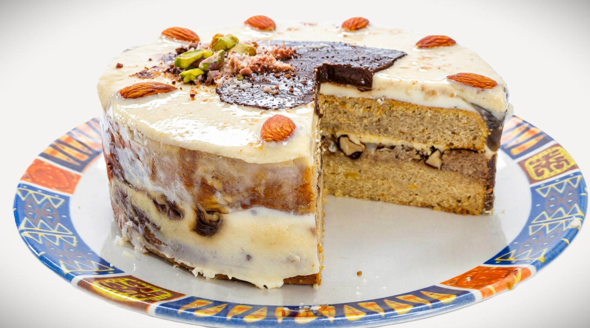
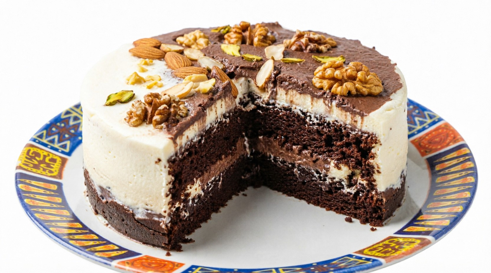
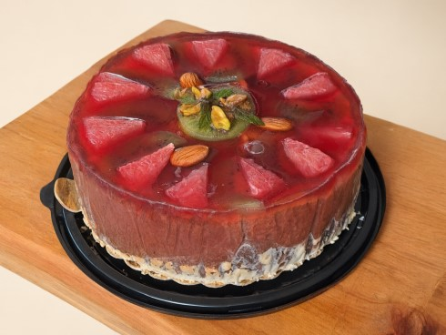

Авторские торты кето
Изображения для общего представления о продукте и могут отличаться от оригинала
Характеристики (КБЖУ и вес) приведены для торта указанного размера.





Сливочный чизкейк с козьим сыром
Мягкий чизкейк на козьем сыре с фруктовым топингом в желе каркаде. Богат белком, содержит полезные жиры и обеспечивает длительное чувство сытости и минимум углеводов.
Ø 18 см | высота 7 см | ~1,2 кг
Базовый от 1000 ₺
КБЖУ на весь торт:
Калории: ≈ 2800 ккал
Белки: ≈ 110 г
Жиры: ≈ 200 г
Углеводы (чистые): ≈ 60 г